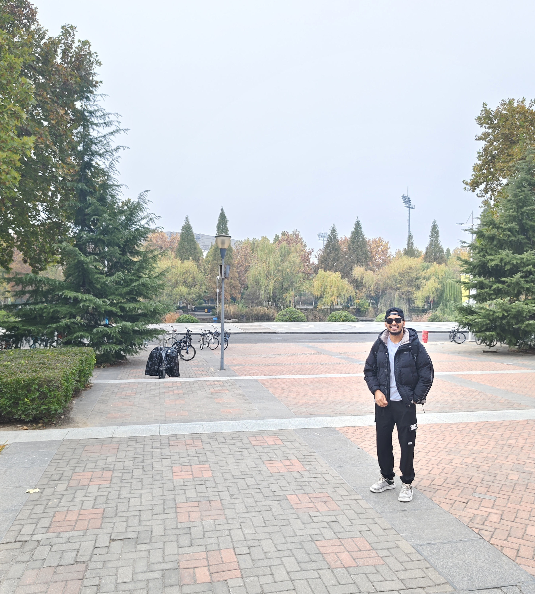
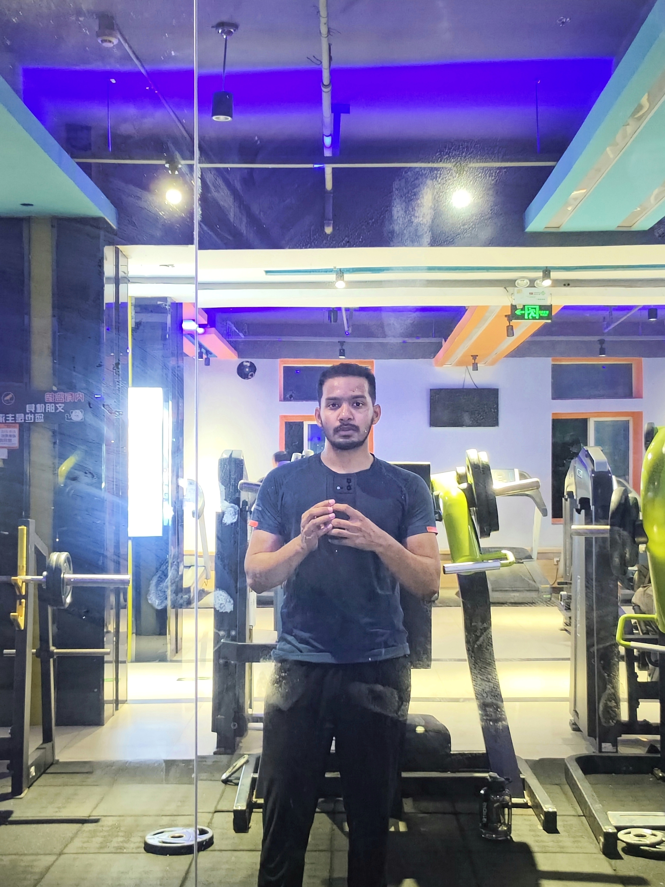

Gallery
Explore some of my moments, projects, and experiences.





Final-year Software Engineering student specializing in AI, deep learning, and machine learning, driven to solve real-world challenges through technology.
Download CVName: Md Muzahidul Islam
Nationality: Bangladeshi
Date of Birth: 17/12/2001
Gender: Male
Address: Fengyang Street, Room 1802, Unit 2, Building 1, Taoli Garden, High-tech Zone, Zhengzhou, China
Hands-on experience in AI research, machine learning, and software development. Proficient in Python programming, statistical analysis, and project implementation. Passionate about bridging the gap between technology and societal challenges.
Explore some of my moments, projects, and experiences.
Programming: Python, MATLAB, SQL, Java, HTML, CSS
Frameworks: NumPy, Pandas, Scikit-learn, Matplotlib
Tools: Git, Jira, PyCharm, Jupyter Notebook